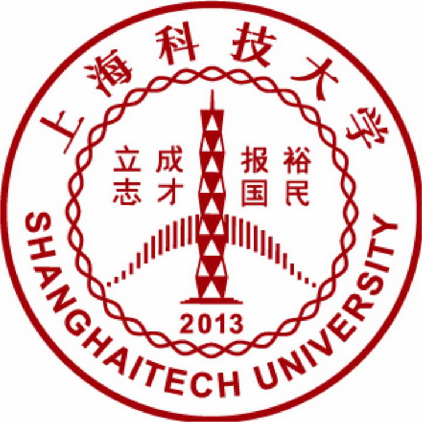

I am currently an Postgraduate in
ShanghaiTech University, Shanghai.
My major is Biology and my research direction is bioinformatics and artificial intelligence.  Visiting students:CAS-MPG Partner Institute for Computational Biology (2020.9-2021.9) Visiting students:BGI (2021.9-2022.6) National Encouragement Scholarship (2020); National Encouragement Scholarship (2021); Wang, S., Xu, X., Wei, C., Li, S., Zhao, J., Zheng, Y., Liu, X., Zeng, X., Yuan, W., & Peng, S. (2022). Molecular evolutionary characteristics of SARS-CoV-2 emerging in the United States. Journal of medical virology, 94(1), 310–317. https://doi.org/10.1002/jmv.27331 Liu, X., Zhao, J., Li, S., Wei, C., Wang, S., Xu, X., Zheng, Y., Deng, X., Yuan, W., Zeng, X., & Peng, S. (2022). Clarifying real receptor binding site between coronavirus HCoV-HKU1 and 9-O-Ac-Sia based on molecular docking. Journal of bioinformatics and computational biology, 20(1), 2150034. https://doi.org/10.1142/S0219720021500347 胡田伟,王世航 & 张东升.(2021).线粒体基因组在红血南极鱼和白血南极鱼中的适应性进化. 基因组学与应用生物学(Z4),3448-3457. doi:10.13417/j.gab.040.003448
Education
Shanghai Ocean University, Shanghai, China
September 2018 - June 2022
Bachelor of Aquaculture
ShanghaiTech University, Shanghai, China
September 2022 - now
Postgraduate of Biology
Activities
Awards
Publications